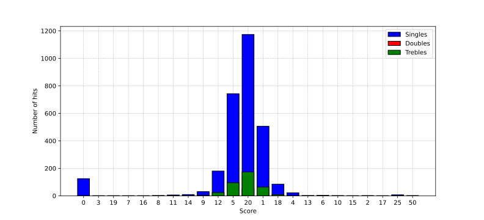
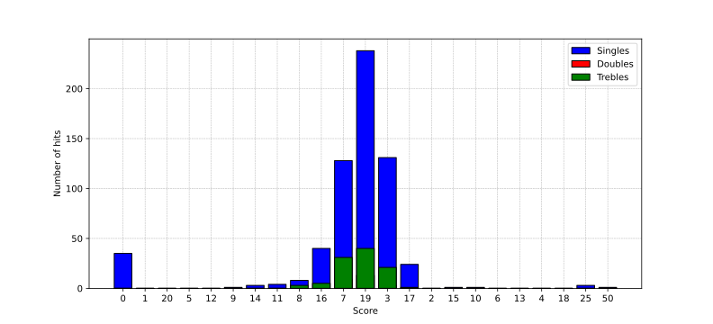

I began running in April 2022 and have since ran over 1000km. As a programming exercise and a way to visualise my runs over time,
I decided to use Strava's API to fetch all my runs and analyse the data using Python.
This involved automatically generating the API access code (which expires after a certain amount of time). I decided to use web-scraping
to do this: the code opens a browser and performs the actions a human would have to take to grab the access code.
See all the plots generated by the code below. In particular, check out the heart rate vs pace graph: this actually contains distance as a
third metric, expressed as the colour of the points. My theory was that the longer the distance, the more accurate the averaging of heart rate
becomes, and therefore, these distances should lie closer to the negative best fit line.
▸ Distance


▸ Average heart rate


Darts
I began playing darts occasionally in 2024 and ever since I have been interested in the statistics side of the game. I am curious to see how my accuracy and
average score per visit changes over time, and if it increases as I would expect through practice.
I decided to write an app in Plotly Dash (Python wrapper for HTML and JavaScript) which runs on my home network and can be accessed on a phone's browser.
This app is used to record each and every dart and keeps track of them in a .csv file, which can be accessed using Pandas for analysis.
▸ App GUI
▸ Score frequency (Treble 20s)
Below you can see the frequency of each score recorded during Treble 20 practice (aiming all three darts at the Treble 20). The numbers' appearances on the dart
board have been linearised onto the x-axis, which is why the axis isn't in numerical order.
Interestingly, a left skew is present - 5 and 12 are more common than
1 and 18. This suggests I have a tendency to miss to the left of the 20 segment, highlighting that my throwing form needs to be corrected to the right.
First dart
Second dart
Third dart
Second dart
Third dart
Singles
Doubles
Trebles
Doubles
Trebles

Below you can see the frequency of each score recorded during Treble 19 practice (aiming all three darts at the Treble 19). The numbers' appearances on the dart
board have been linearised onto the x-axis, which is why the axis isn't in numerical order.
Interestingly, the left skew present in the Treble 20 plots is much less pronounced here - 7 and 16 are not necessarily more common than
3 and 17. This suggests I have a tendency to miss to the right or left about the same proportion of the time when aiming for 19s.
First dart
Second dart
Third dart
Second dart
Third dart
Singles
Doubles
Trebles
Doubles
Trebles
